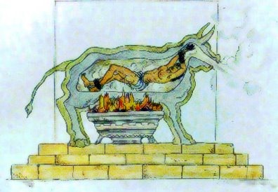

El Bou de Falaris
El bou de Falaris és un instrument de tortura. El nom s'atribueix a Falaris, tirà d'Acragas, Sicília, que va morir en l'any 554 a. C. Els ajusticiats s'introduïen a l'interior d'una estàtua de bronze buida amb forma de toro. L'estàtua es col·locava damunt d'una foguera, de manera que la temperatura de l'interior augmentava com en un forn. Els xiscles i els crits de les víctimes sortien per la boca del bou, fent semblar que la figura Mugía. La llegenda explica que el seu dissenyador, va morir en ser introduït en la seva pròpia creació pels subordinats de Falaris quan li va presentar l'instrument.
Alguns erudits de principis del segle XX van indicar una possible connexió entre el bou de Falaris i les imatges dels cultes fenicis.
La història del toro no pot ser descartada com a pura invenció. Píndaro, qui va viure menys d'un segle més tard, va associar expressament a aquest instrument de tortura amb el nom del tirà. Certament va existir un bou de Falaris a Agrigent que va ser traslladat a Cartago pels mateixos cartaginesos quan va tornar a ser presa per Publi Corneli Escipió l'Africà, també conegut com Escipió el Major, i retornat a Agrigent (c. 200 a. C.). No obstant això, és més probable que fos Publi Corneli Escipió Emilià, àlies Escipió el Menor, que va tornar aquest toro i altres obres d'art robades a les seves ciutats sicilianes originàries després de la destrucció total de Cartago (c. 146 a. C.) que va posar fi a la tercera guerra púnica.
El turment de Falaris és esmentat sense aportar detalls per Aristòtil en parlar d'accions depravades.